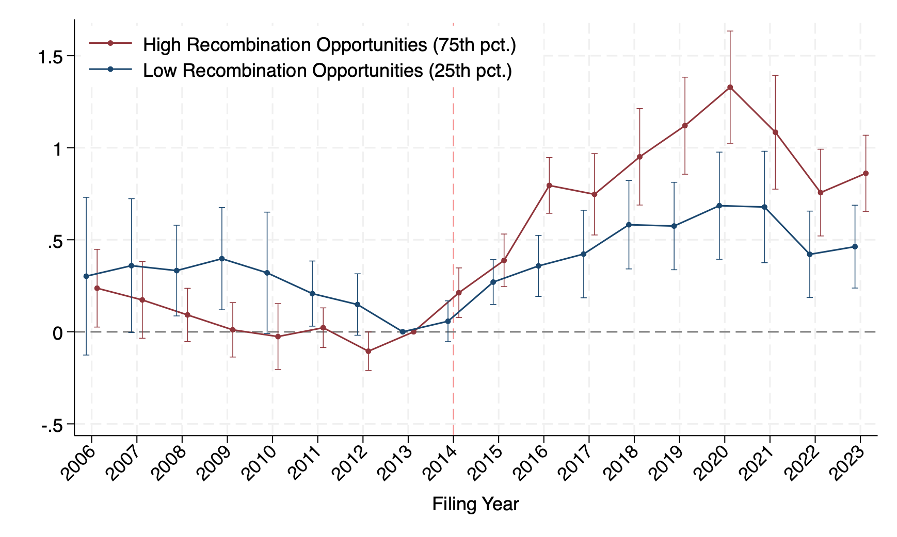
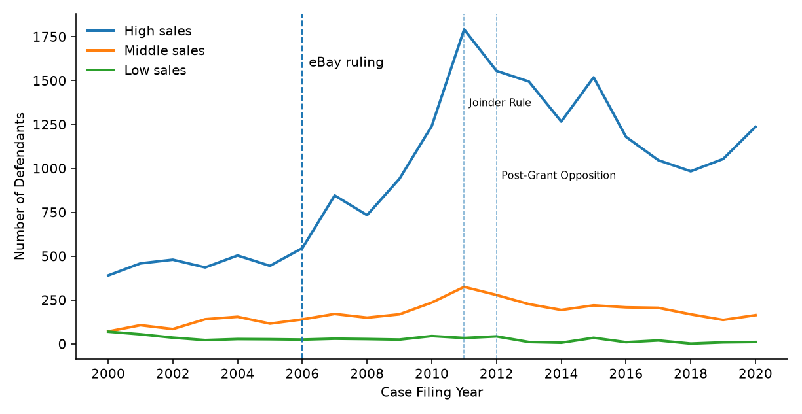

I am a PhD candidate at the Toulouse School of Economics (TSE), and I am on the 2026–2027 academic job market. I was a visiting PhD student at the Kellogg School of Management, Northwestern University, in Spring 2026.
My research focuses on the economics of innovation, with particular connections to corporate finance and industrial organization. I conduct empirical research on how innovators turn ideas and knowledge into new products and technologies, and how this process responds to changes in economic incentives and technological capabilities.
More specifically, I study how firms and entrepreneurs discover and develop new opportunities, mobilize and recombine knowledge, and adapt their innovation activities as their economic and technological environment changes. My research uses rich micro-level data and combines econometrics with modern computational methods.
Email: danfeng.yue@tse-fr.eu
Research
Job Market Paper
Adaptive Innovation by Recombining Knowledge
Abstract: Innovation investments are often specific to particular projects, yet the knowledge they create may remain useful when economic conditions change. This paper studies how innovators adapt the use of accumulated knowledge when its economic returns decline. We exploit the 2014 Supreme Court decision in Alice Corp. v. CLS Bank International, which tightened patent eligibility with substantial variation across technologies, especially for software and business methods. Following the decision, innovators in more exposed technologies increasingly combine affected knowledge with knowledge from other technological domains, producing broader and less-exposed combinations. This response is stronger when affected technologies have greater recombination opportunities, that is, stronger connections to potential complements in the technology space. At the firm level, recombination capacity depends on whether these complements already lie within firms’ technological portfolios. Firms with greater recombination capacity sustain more innovation in affected technologies and experience smaller declines in performance. These findings show that innovators respond to changing economic incentives not only by reallocating innovative effort, but also by redirecting how accumulated knowledge is used.

More exposed technologies increase recombination more strongly after Alice when they have greater pre-existing recombination opportunities. Recombination is measured by the number of distinct technology classes in each patent.
Presentations: Fall 2025 TSE Finance Workshop; Spring 2026 Kellogg FINC Brown Bag; Spring 2026 TPRI Research Workshop; 2026 Chicago Entrepreneurial Finance Workshop; 2026 EEA-ESEM Congress; 2026 EARIE; 2026 TSE PhD Student Workshop (discussant: Doh-Shin Jeon; scheduled).
Working Papers
How Legal Remedies Drive Patent Litigation Explosions: Evidence from the eBay Ruling
Abstract: The 2006 eBay Inc. v. MercExchange decision marked a pivotal shift in U.S. patent law by replacing automatic injunctions with a more discretionary, damages-based remedy. This paper argues that the ruling catalyzed a wave of patent litigation, particularly by patent assertion entities (PAEs), by altering the bargaining environment and shifting the resolution of disputes from settlements to court judgments. Using a screening model with asymmetric information, I show that the probability of litigation increases as injunctions become harder to obtain —especially for PAEs targeting high-sales firms. Empirical evidence from a difference-in-differences analysis supports this theoretical prediction. These results highlight how legal reforms can reshape the strategic behavior of litigants and alter the landscape of patent enforcement.

After the eBay ruling, the number of high-sales defendants increased much more sharply than that of lower-sales defendants. This pattern is consistent with larger firms experiencing a greater change in litigation incentives when the risk of injunction falls.
Presentations: Fall 2024 TSE Finance Workshop; 2025 Entrepreneurship and Finance (ENTFIN) Conference, PhD Session and CASCAD Session (discussant: Logan Emery).
Work in Progress
From Ideas to Digital Products: How AI Expands the Innovation Frontier
LLMs as Knowledge Intermediaries: Do They (De)Centralize Innovation?
News-Based Measures: A Count Approach
Teaching
Toulouse School of Economics
Teaching Assistant
Central University of Finance and Economics
Teaching Assistant